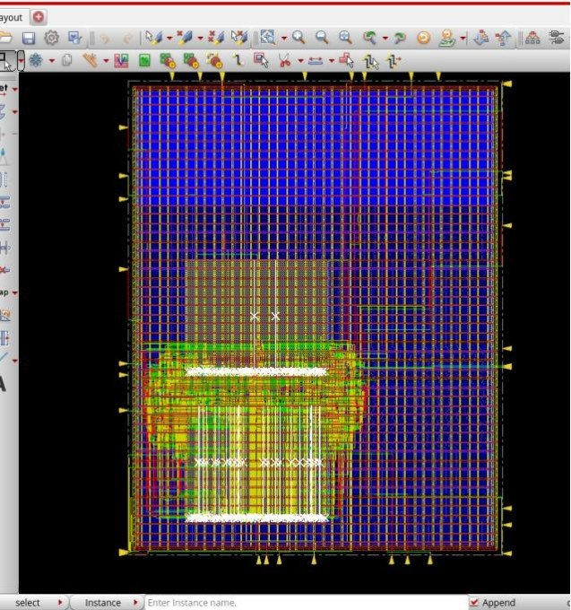
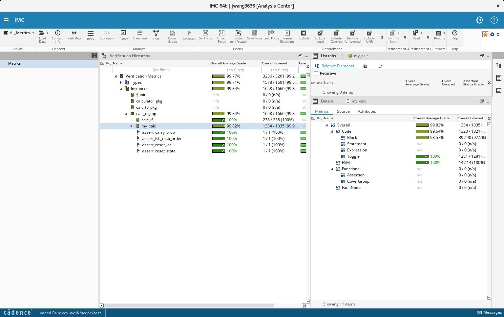
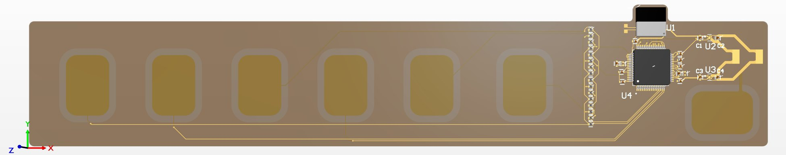
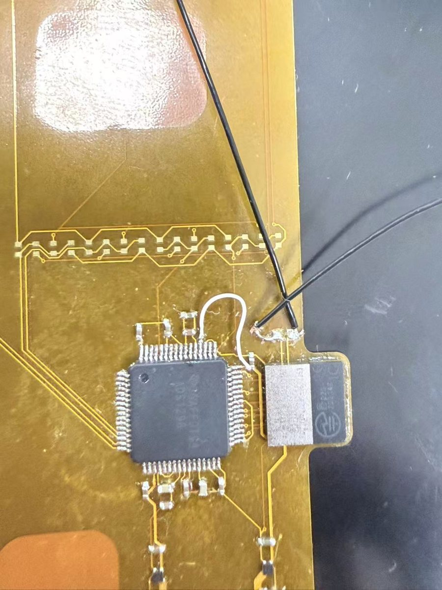
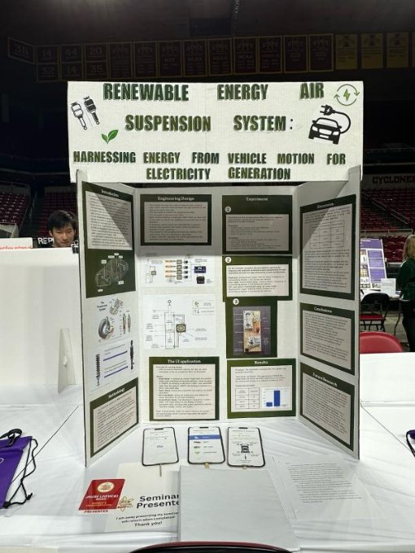

I worked out how a Wheatstone bridge turns a tiny resistance change into a voltage, added an instrumentation amplifier in LTspice to make it about 100 times more sensitive, and built the bridge on a breadboard at the Hive to compare real measurements with my math.
Projects
Projects
My main projects, newest first. For more detail and code snippets, see my one-page portfolio.
Wheatstone Bridge Sensor Circuit

RISC-V (RV32I) Single-Core CPU
A small RISC-V CPU I'm designing, verifying and taking to layout. It runs a subset of RV32I (addi, add, sub, lw, sw, beq, sll, srl, ebreak) at 3 cycles per instruction: fetch, decode, execute. Right now I'm connecting it to the SRAM and memory controller, testing each instruction in simulation, and setting up the RTL-to-GDS flow.
64-Bit Calculator ASIC
1,000+ → 0
DRC violations
−2.709 → +0.01
setup WNS (ns)
99.82%
functional coverage
7 / 7
assertions passing
The chip reads pairs of 64-bit numbers from SRAM, adds them with a 32-bit adder in two passes, and writes the result back, all run by a 7-state FSM. I took it from RTL to a routed layout.
I built the UVM testbench (driver, monitor, scoreboard) and wrote SystemVerilog assertions for things like the carry making it into the high half.
In Innovus, the first routed design had over 1,000 DRC violations. I read the SRAM LEF files to see where routing wasn't allowed, then added placement halos, routing blockages on MET1 to MET3, and more routing layers. That got it to zero.
The flow I ran, with my steps highlighted:
- RTL
- Verify
- Synthesis
- Floorplan
- Place + CTS
- Route
- Timing + DRC
- GDS



Wearable EMG Flex PCB

A board that sits on the skin, reads muscle signals through six electrode pads, and sends the data over Bluetooth. I co-designed the schematic and 2-layer flex layout in Altium with the EMG subteam lead. EMG signals are only microvolts to millivolts, so the design uses differential inputs, a 24-bit ADS1298 front end, and separate LDOs for the analog and digital sides.
I hand-assembled and reworked three prototypes under a stereo microscope. On the first boards I traced a wrong clock-select pin back to the datasheet and fixed it with a jumper wire, then wrote an assembly guide for the team.


OTA Sizing Optimizer
I built a MATLAB surrogate optimization pipeline that sizes OTA amplifiers. It found the same best design as brute-force search with 5x fewer circuit evaluations (500 vs. 2,511) and about 8x less runtime (3 min vs. 25 min). I also found a bug in the figure-of-merit formula that pushed the optimizer toward designs that weren't physically valid, and flagged it so it could be fixed.
NASA Student Launch
I led payload design, integration and flight-readiness testing for a dual-deployment high-power rocket. It flew to about 1 mile, and we qualified out of more than 1,000 teams. The payload used a Teensy 4.1 with an IMU and barometer to drive servo canards toward a target altitude. For our design reviews with NASA engineers we wrote a failure mode analysis and a two-person arming procedure.

Air Suspension Research + Internship
I designed a renewable energy air suspension that turns a car's bouncing into electricity through a hydraulic bypass and a generator. I estimated about 6.8% more range for an EV and wrote a 35-page paper. It won 2nd place at the 2024 Iowa State Science Fair and awards from the Yale Science & Engineering Association, NOAA and the Office of Naval Research.
The next summer I interned at Shanghai ZhiCheng Software, writing embedded control software that reads 5 live vehicle inputs and drives an air pump to hold chassis height within ±5 mm.
